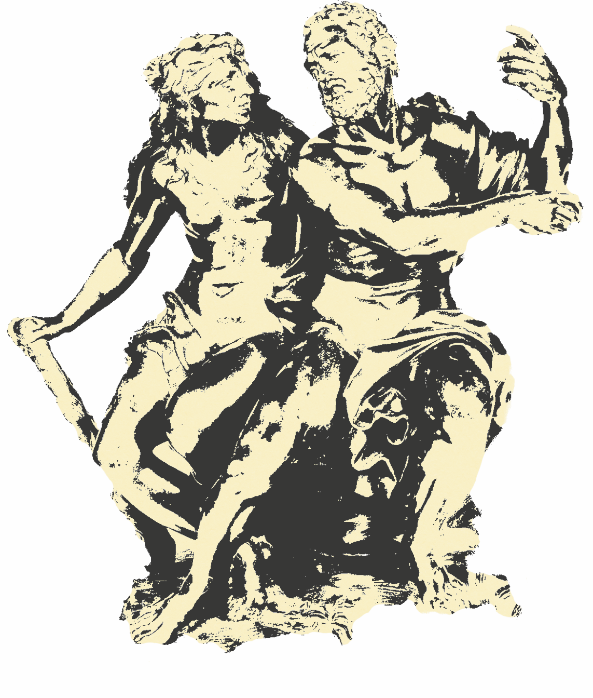
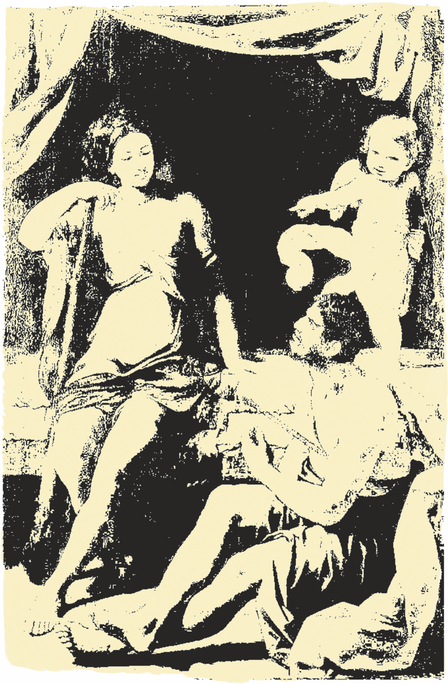

La voce di Iole
dalle Metamorfosi di Ovidio
alle Hercules Oetaeus di Seneca

Il poeta di Sulmona torna a parlare di Iole nelle Metamorfosi, il perpetuum carmen dell’ 8 d.C., nello specifico nel IX libro, che s’incentra sulla figura di Eracle. Sicuramente lo spazio dedicato alle sue gloriose imprese, alla sua morte o all’apoteosi, tema tipicamente augusteo, viene ridimensionato nel contesto dell’episodio in cui sono le donne a dominare la scena.
Ciò che sorprende è che Ovidio decida di far seguire al drammatico momento della morte e della deificazione di Eracle un flashback sulla sua nascita.
Alcmena racconta a sua nuora Iole, che è incinta, della gravidanza di Eracle: il parto travagliato era stato bloccato dalla dea Giunone: infatti, aveva cercato di intralciare la nascita, intrecciando la gamba destra sulla sinistra e le mani alla maniera di un pettine; Galantide, assistente al parto con un espediente, assicura la nascita dell’eroe. Iole, già amante di Eracle e poi moglie di Illo, appare nel poema come continuazione della vicenda narrata nel dramma del V secolo a.C., preparando il racconto che seguirà ai versi 324-383:
OVIDIO, Met. IX, 324-399
Dixit et admonitu veteris commota ministrae
ingemuit; quam sic nurus est affata dolentem: 325
“Te tamen, o genetrix, alienae sanguine verso
rapta movet facies; quid si tibi mira sororis
fata meae referam? Quamquam lacrimaeque dolorque
impediunt prohibentque loqui. Fuit unica matri
(me pater ex alia genuit) notissima forma 330
Oechalidum Dryope, quam virginitate carentem
vimque dei passam Delphos Delonque tenentis
excipit Andraemon et habetur coniuge felix.
Est lacus acclivis devexo margine formam
litoris efficiens; summum myrteta coronant. 335
Venerat huc Dryope fatorum nescia, quoque
indignere magnis, nymphis latura coronas;
inque sinu puerum, qui nondum impleverat annum,
dulce ferebat onus tepidique ope lactis alebat.
Haud procul a stagno Tyrios imitata colores 340
in spem bacarum florebat aquatica lotos.
Carpserat hinc Dryope, quos oblectamina nato
porrigeret, flores; et idem factura videbar
(namque aderam); vidi guttas e flore cruentas
decidere et tremulo ramos horrore moveri. 345
Scilicet, ut referunt tardi nunc denique agrestes,
Lotis in hanc nymphe, fugiens obscaena Priapi,
contulerat versos, servato nomine, vultus.
Nescierat soror hoc; quae cum perterrita retro
ire et adoratis vellet discedere nymphis, 350
haeserunt radice pedes; convellere pugnat,
nec quicquam nisi summa movet; subcrescit ab imo
totaque paulatim lentus premit inguina cortex.
Ut vidit, conata manu laniare capillos,
fronde manu implevit; frondes caput omne tenebant. 355
At puer Amphissos, namque hoc avus Eurytus illi
addiderat nomen, materna rigescere sentit
ubera nec sequitur ducentem lacteus umor.
Spectatrix aderam facti crudelis opemque
non poteram tibi ferre, soror; quantumque valebam, 360
crescentem truncum ramosque amplexa morabar
et, fateor, volvi sub eodem cortice condi.
Ecce vir Andraemon genitorque miserrimus adsunt
et quaerunt Dryopen; Dryopen quaerentibus illis
ostendi loton; tepido dant oscula ligno 365
affusique suae radicibus arboris haerent.
Nil nisi iam faciem, quod non foret arbor, habebas,
cara soror; lacrimae misero de corpore factis
irrorant foglie et, dum licet oraque praestant
vocis iter, tales effundit in aera questus: 370
"Siqua fides miseris, hoc me per numina iuro
non meruisse nefas, patior sine crimine poenam.
Viximus innocuae; si mentior, arida perdam
quas habeo frondes et caesa securibus urar.
Hunc tamen infantem maternis demite ramis 375
et date nutrici nostraque sub arbore saepe
lac facitote bibat nostraque sub arbore ludat.
Cumque loqui poterit, matrem facitote salutet
et tristis dicat: "latet hoc in stipite mater.”
Stagna tamen timeat nec carpat ab arbore flores 380
et frutices omnes corpus putet esse deorum.
Care vale coniunx et tu, germana, paterque;
qui, siqua est pietas, ab acutae vulnere falcis,
a pecoris morsu frondes defendite nostras.
Et, quoniam mihi fas ad vos incumbere non est, 385
erigite huc artus et ad oscula nostra venite,
dum tangi possunt, parvumque attollite natum.
Plura loqui nequeo; nam iam per candida mollis
colla liber serpit summoque cacumine condor.
Ex oculis removete manus; sine munere vestro 390
contegat inductus morientia lumina cortex.
“Desierant simul ora loqui, simul esse; diuque
corpore mutato rami calvere recentes.”
Dumque refert Iole factum mirabile, dumque
Eurytidos lacrimas admoto pollice siccat 395
Alcmene (flet et ipsa tamen), compescuit omnem
res nova tristitiam; nam limine constitit alto
paene puer dubiaque tegens lanugine malas,
ora reformatus primos Iolaus in annos.
“Questo fu il racconto di Alcmena, che si commosse e gemette al ricordo della sua antica ancella, suscitando nella nuora il desiderio di consolarla: “Tu ti commuovi, madre” le disse “perché una persona estranea alla vostra famiglia perdette l’aspetto umano: ma se ti raccontassi il tragico destino di mia sorella? Non so però se riuscirò a parlare, perché le lacrime e il dolore mi soffocano e tentano di impedirmelo, Driope era l’unica figlia della moglie di mio padre, che ebbe da un’altra donna; essa era famosissima per la sua bellezza tra le fanciulle d’Ecalia. Fu privata della verginità da colui che regna su Delfi e su Delo, il quale le si impose con la forza; andò poi sposa ad Andremone, che fu felice con lei nel matrimonio ed era ritenuto fortunato. C’è un lago, circondato da margini in declivio che formano una ripida spiaggia, coronata in alto da arbusti di mirto. In questo luogo si era recata Driope, ignara del suo destino, e aveva intenzione (questo particolare ti farà indignare ancora di più) di offrire serti di fiori alle ninfe, portava al seno, dolce peso, il figlioletto che non aveva ancora compiuto un anno e lo nutriva col suo tiepido latte. Non lontano dal lago cresceva un loto acquatico, tutto pieno di fiori del color della porpora di Turo, nell’attesa delle bacche. Driope ne colse alcuni per darli al bimbo, che se ne baloccasse, e io, che l’accompagnavo, stavo per fare altrettanto: ma vidi stillare gocce di sangue dai fiori recisi e i rami vibrare e rabbrividire. Il fatto era, come più, ma troppo tardi, ci riferirono dei contadini, che in quell’albero si era trasformata la ninfa Loti, per fuggire l’aggressiva libidine di Priapo, mutando l’aspetto ma conservando il proprio nome. Mia sorella non lo sapeva. Quando volle ritrarsi, terrorizzata, e andarsene, dopo aver levato preghiere alle ninfe, i suoi piedi rimasero vincolati a una radice. Si sforzò disperatamente di strapparsi da lì, ma riuscì a scuotere solo le parti superiori. Piano piano la corteccia saliva e le avvolgeva in una stretta tenace tutto l’inguine, Rendendosene conto, disperata, tentò di strapparsi i capelli con le mani, ma queste si riempirono di fogli e altre foglie le incisero il capo. Anfisso, il bambino (questo era il nome che il nonno Eurito gli aveva imposto), sentì indurirsi il seno materno e non trovò più latte da succhiare. Io assistevo, impotente spettatrice del tuo crudele destino, o sorella, e, per quanto le mie forze mi soccorrevano, tentavo di trattenere col mio abbraccio la crescita del tronco e dei rami; desiderai perfino, lo confesso, di essere racchiusa nella stessa corteccia. Ecco, il marito Andremone e l’infelice genitore vengono a cercare Driope. Essi cercano Driope e il mostrò loro il loto. Si gettano sul tronco a baciare il legno tiepido e ad abbracciare le radici del loro albero. Tutta è divenuta albero la mia cara sorella, tranne la faccia, e lacrime piovono già sulle foglie nate dal misero corpo […]”.
Iole, che fino a questo momento aveva ascoltato Alcmena, ora diventa la narratrice di una nuova storia e per la prima volta acquisisce voce. Ciò che colpisce di questa novità ovidiana è che lei, pur avendo finalmente la parola, non la usa per parlare del suo passato travagliato, ma per raccontare una storia della trasformazione di Driope in albero dopo aver raccolto dei fiori di loto per far divertire il figlio Anfisso. La metamorfosi avviene sotto gli occhi di Iole (v. 344), la quale riferisce una stessa trasformazione, subita precedentemente dalla ninfa Lotide a causa di Priapo, il dio che si era innamorato di lei e aveva tentato di stuprarla in piena notte. La fabula è presentata come un inciso all’interno di una più ampia storia. Iole in maniera molto semplice, quasi come una conversazione quotidiana, sta raccontando a un’Alcmena invecchiata, all’interno della stessa stanza dove è nato Eracle (v. 297), la storia di metamorfosi per contagio: Driope, appena tocca con la mano un ramo, vede fuoriuscire del sangue perché la ninfa, precedentemente, era stata trasformata in pianta. Il nucleo principale in questo racconto è costituito dalla storia di Driope e a lei il poeta decide di dare voce, adottando un nuovo strumento per costruire il suo complesso organismo narrativo: la tecnica del “racconto a incastro”, che consiste nell’inserire una narrazione in quella principale.

La vicenda di Iole, principessa e figlia di Eurito rapita e resa bottino di guerra da Eracle, torna a essere trattata in Seneca, nell’Hercules Oetaeus. La tragedia latina riprende a grandi linee le Trachinie sofoclee nella trama, dato che racconta della morte di Eracle. La figlia di Eurito in Seneca subisce un cambiamento significativo: rompe il silenzio prolungato e persistente sofocleo e acquista la voce che le permette finalmente di esprimere il dolore e la frustrazione per la perdita dei suoi cari. A differenza delle Metamorfosi, in cui le sue parole esponevano la storia relativa alla sorella Driope, in questo caso la principessa di Ecalia, strappata dalla sua terra d’origine, dal suo palazzo e dalla sua famiglia, inevitabilmente rievoca le atrocità subite per colpa di Eracle. L’unico intervento affidato alla donna offesa non poteva che essere la descrizione della brutale distruzione di Ecalia e del torto subito dall’eroe. Seneca modifica la caratterizzazione dell’amante che era stata già fatta in precedenza: Iole non è più una prigioniera che si distingue solo per il nobile aspetto, le vesti, l’acconciatura e la bellezza, è una creazione unica in Seneca, che non ha riscontri precedenti e che dopo secoli permette di avvalorare il significato del silenzio che caratterizzava la sua figura in molte opere. I versi iniziali a lei affidati ne sono una dimostrazione:
SENECA, Herc. Oet., 172-202
At ego infelix non templa suis
conlapsa deis sparsosve focos,
natis mixtos arsisse patres 175
hominique deos, templa sepulcris:
nullum querimur commune malum.
Alio nostras fortuna vocat
lacrimas, alias flere ruinas
mea fata iubent. 180
Quae prima querar? Quae summa gemam?
Pariter cunctas deflere iuvat,
nec plura dedit pectora Tellus,
ut digna sonent verbera fatis.
Me vel Sipylum flebile saxum 185
fingite, superi,
vel in Eridani ponite ripis,
ubi maesta sonat Phaethontiadum
silva sororum;
me vel Siculis addite saxis,
ubi fata gemam Thessala Siren, 190
vel in Edonas tollite silvas,
qualis natum Daulias ales
solet Ismaria flere sub umbra:
formam lacrimis aptate meis
resonetque malis aspera Trachin. 195
Cypria lacrimas Myrrha tuetur,
raptum coniunx Ceyca gemit,
sibi Tantalis est facta superstes;
fugit vultus Philomela suos
natumque sonat flebilis Atthis: 200
cur mea nondum capiunt volucres
bracchia plumas?
Iole: “Ma io infelice, non lamento un male pubblico: che i templi sono caduti con i loro dèi o i focolari dispersi, che i padri siano bruciati insieme ai figli, gli dèi insieme agli uomini, i templi con i sepolcri. Altrove la sorte chiama le mie lacrime, i miei fati mi ordinano di piangere altre rovine. Di quali cose dovrei lamentarmi come prime? Di quali gemere come ultime? Mi piace piangerle tutte nella stessa misura, né la terra mi ha concesso più petti, cosicché risuonino colpi degni del mio destino. O dèi superi, trasformatemi in roccia piangente del Sipilo, o ponetemi sulle rive dell’Eridano, dove mesta risuona la selva delle sorelle di Fetonte; o aggiungetemi ai sassi di Sicilia, dove tessalica Sirena possa piangere il mio destino, o portatemi nei boschi traci, come l’uccello d’Aulide suole piangere il figlio all’ombra dell’Ismaro adattare l’aspetto alle mie lacrime e risuoni l’aspra Trachis del mio dolore, la cipriota Mirra guarda le sue lacrime, la moglie di Ceice piange lo sposo rapito, la figlia di Tantalo sopravvive a sé stessa; Filomela ha cambiato il suo aspetto e la fanciulla attica ripete il nome del figlio tra le lacrime: perché le mie braccia non prendono ancora piume d’uccello.”
Il discorso si apre subito con una dichiarazione diretta dello stato emotivo di Iole, elemento che segna una significativa differenza rispetto alle precedenti rappresentazioni del personaggio. Nelle fonti anteriori, infatti, la sofferenza e l’interiorità della giovane affioravano attraverso lo sguardo o le parole degli altri personaggi. Subito dopo l’introduzione (vv. 180-184), in un’ampia sezione della tragedia (vv. 185-205), Iole elenca dei personaggi mitologici eternamente piangenti, forse riprendendo già il catalogo presente nell’Agamemnon (vv. 667-694), in cui si allude prima al mito di Procne, Filomela e Tereo e poi si evoca il mito di Cicno, figlio di Stenelo, a cui segue la storia di Ceice e Alcione. Con la differenza che, nell’Hercules Oetaeus, Iole esprime il desiderio di essere trasportata nei luoghi in cui altre eroine piangenti avevano subito metamorfosi, come ad esempio sul monte Sipilo (v. 186) o sulle rive dell’Eridano (v. 187) o addirittura di essere lei stessa trasformata in una di quelle creature (v. 201), esprimendo un desiderio che ricorreva come modulo espressivo all’interno di Cori tragici.
Soltanto alla fine di una lista di personaggi mutati, al v. 201, Iole specifica che vorrebbe trasformarsi in un uccello e non in un albero o una pietra, così da poter far ritorno a Trachis. Quasi alla fine del suo intervento (vv. 220-225), Iole si rende conto di non dovere rimuginare sul passato, dal momento che ciò che le dovrebbe più angosciare è il suo futuro da schiava, una sorte molto più crudele e dura rispetto a quella toccata ai suoi parentes. Rapidamente la riflessione sintetica sulle possibili mansioni da schiava che potrebbe coinvolgerla d’ora in avanti viene superata da un’imprecazione contro la sua bellezza che aveva spinto l’eroe a chiederne la mano a Eurito.